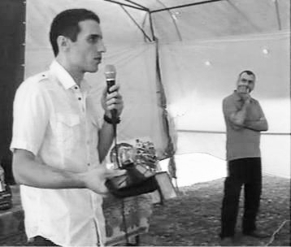

ПОЛИТИЧЕСКАЯ И ЭКОНОМИЧЕСКАЯ ИЗОЛЯЦИЯ АРМЕНИИ. ПОСЛЕДСТВИЯ
После развала Советского Союза страны Южного Кавказа не ощущали недостаток внимания со стороны международного сообщества. Отчасти такое внимание было обусловлено горячими точками, которые гибнущий Союз предусмотрительно расставил по всему периметру былой империи. Однако регион сам по себе является перепутьем Европы, Ближнего Востока и Азии, где сплетаются или расходятся интересы разных геополитических и региональных игроков. С одной стороны это приводит к тому что есть успех различных интеграционных проектов, как экономических, так и политических. С другой стороны этот факт не способствует быстрому решению конфликтов на Южном Кавказе, по крайней мере до тех пор, когда интересы замешанных в регионе сил будут совпадать в отношении конфликтов в Нагорном Карабахе, Абхазии и Южной Осетии. В итоге складывается интересный феномен, когда регион, имеющий большой потенциал экономической и политической интеграции, все больше скатывается в реальность разделенных сфер влияния, закрытых границ и упущенных возможностей.
В 2009 году Европейским Союзом (ЕС) по инициативе Польши была принята программа Восточного партнерства, предусматривающая политическую и экономическую интеграцию стран-участниц (Украина, Молдова, Белорусь, Армения, Азербайджан и Грузия) с ЕС. В рамках Восточного партнерства ЕС начал переговоры по Соглашению об ассоциации с Украиной и Молдовой (2009 г.), а затем с Грузией и Арменией (2010 г.). Соглашение об ассоциации включало как политическую часть, так и соглашение о Зоне свободной торговли (ЗСТ). Ожидалось, что страны подпишут договор об ассоциации с ЕС на Вильнюсском саммите Восточного партнерства в 2013 г., выполнив к этому сроку обязательств о политических реформах и приведении стандартов и законодательств в соответствие с требованиями ЕС. Европейские чиновники не раз хвалили Армению за успешное продвижение в вопросе выполнения взятых на себя обязательств и сулили подписание с Арменией Соглашение об ассоциации уже в ноябре 2013 г. Однако с середины 2013 г. Армения уже подавала признаки неуверенности или нежелания подписывать Соглашение. Так например, президент Серж Саргсян ставил перед ЕС ультимативные условия, как предоставление финансовой помощи Еревану и открытие границы с Турцией. Если в вопросе финансов европейцы обещали помочь Армении при условии подписания соглашения, то проблема закрытой границы была вне компетенции ЕС.
По мере приближения к дате третьего саммита Восточного партнерства, на котором намечалось подписание Соглашения об ассоциации, Россия все настойчивее стала предлагать странам-кандидатам членство в Таможенном союзе (ТС). Хотя армянские чиновники всех рангов отрицали возможность вступления Армении в Таможенный союз, указывая на нецелесообразность с учетом неимения общей границы со странами ТС, 3 сентября 2013 г. президент Армении Серж Саркисян неожиданно для всех заявил из Москвы, что Армения приостанавливает процесс экономического сближения с Европой и берет курс на вступление в ТС, а в последующем в Евразийский экономический союз (ЕАЭС).
Исключенная из важных региональных проектов Армения этим решением еще более усугубила свою политическую и экономическую изоляцию, сдавая свою судьбу в руки Кремля. Надежды на российские инвестиции и доступность рынка ТС для армянских товаров не оправдались. Товарооборот между Арменией и Россией в первом квартале 2015 г. упал на 41.2% и составил $190.3 млн, в то время как общий внешнеторговый оборот Армении по итогам первого квартала 2015 г. упал на 28,5% по сравнению с тем же показателем 2014 г. Были заморожены также такие крупнейшие проекты, как строительство новой АЭС и железной дороги Иран-Армения. Более того, проекты, на которые очень надеялись в Армении, стали реализовываться Азербайджаном. Как известно, уже достигнута договоренность между ОАО РЖД и Иранские железные дороги о строительстве железнодорожной линии Решт-Астара (Иран)-Астара (Азербайджан), связывающей Иран с Россией через Азербайджан. В то же время, теперь уже бывший руководитель ОАО РЖД В. Якунин заявил, что проект железной дороги соединяющей Армению с Ираном является неперспективным. Со стороны России также блокируются перспективы Армении как транзитной страны для иранских энергоносителей. В 2013 году Национальным собранием Армении был ратифицирован договор о передаче Газпрому последних 20% государственных акций компании ЗАО «Армросгазпром», а также всей газотранспортной системы республики, и эксклюзивное право на транзит и продажу газа. Политика сдачи России стратегически важной инфраструктуры Армении продолжается по сей день. Так, 19 августа сего года правительство РА одобрило новый договор, по которому Газпрому переходит монополия экспорта электроэнергии в Грузию и Иран. Ясно, что такое состояние дел не может устраивать иранскую сторону. Устами чиновников и дипломатов различных рангов Иран не раз давал понять, что заинтересован в продаже Армении газа по выгодным ценам, а также в возможном транзите энергоносителей в Европу через Армению. Но и здесь, кажется, не суждено сбыться надеждам на прорыв изоляции, в которой страна находится вот уже более 20 лет. К тому же, Иран выразил уже заинтересованность в возобновлении проекта Набукко, по которому предполагается доставлять газ из Азербайджана, Туркменистана и Ирана в Европу в обход России.
Неважно обстоят дела и во взаимоотношениях Еревана с остальным миром в политической плоскости и гуманитарной сфере. Хотя Армения все еще является членом Восточного партнерства, и ЕС пытается каким-то образом реанимировать отношения с Ереваном, пытаясь найти новый формат сотрудничества, большая часть финансовой помощи и различных программ, реализуемых международными фондами и донорами, была свернута или не получает продолжения. Это сказывается также на гражданском секторе и независимых СМИ, которые почти всецело поддерживаются международными организациями. Ожидается, что будут также сокращены или свернуты многочисленные программы помощи ЕС правительству Армении, нацеленные на реформы системы правосудия, правоохранительных органов и эффективного администрирования, - а это значительные финансовые средства, подпитывающие государственные структуры.
Кажется, европейские политики уже поняли, что Ереван не в состоянии самостоятельно принимать какие-либо решения, и договариваться, возможно и торговаться нужно с Москвой. Похоже, что детали нового соглашения о форме взаимодействия ЕС и Армении в рамках Восточного партнерства будут согласовываться с Москвой, чему в Ереване не сосбо противяться. Единственной областью, где Москва пока не координирует действия Армении, и это очень нервирует русских, является партнерская программа с НАТО. В этом контексте предложение Сержа Саркисяна построить учебный центр ОДКБ на базе Миротворческой бригады Армении, которая участвует в миротворческих операциях НАТО в рамках программы «Партнерство во имя мира», ставит под сомнение дальнейшее сотрудничество с НАТО. То есть этим показыватся что все политические связи Армении целеустремленно пресекаются, и Москва уже открыто ставит себе цель уничтожение суверенита Армении.
И экономически, и политически самым слабым звеном на Южном Кавказе является Армения. Как мы увидели, происходит экономическая и политическая аннексия Россией жалких остатков собственности и независимости этой республики. В Кремле уже давно не церемонятся с Ереваном, и указания дают прямым текстом, обращаясь с лицом, называющим себя президентом республики Армения, как с мальчиком на побегушках. Кремлевские идеологи также привыкли говорить с целым народом языком угроз и шантажа. Чего только стоит известное «предупреждение» Дугина армянам не заигрывать с Западом, не то Армения будет стерта с лица земли. Так в России традиционно строят отношения с партнерами.
Однако дело в том, что ликвидирование государственности Армении станет трагедией не только для армян. Если удастся окончательно поглотить Армению, Россия на этом не остановится. Следующими будут Азербайджан и Грузия, благо есть предостаточно поводов и способов для давления на эти страны. Уже сейчас наблюдается активная политика колонизации Азербайджана Москвой. Используя Нагорно-карабахский конфликт Кремль пытается торговаться с Азербайджаном. Уже есть признаки того, что достигнуты некие договоренности. Прокремлевской прессой был вброс информации, что Баку дал согласие на строительство новой радиолокационной станции. Потеплениям отношений Азербайджана и России способствует также шаткое положение Алиева как внутри страны, так и усиливающаяся критика Запада его репрессивной политики. Для сохранения власти Алиеву остаётся один выход - войти в клуб друзей-диктаторов Путина.
При таком развитии думается, что не сладко придется и Грузии, пока являющейся последним бастионом демократии в Южном Кавказе. Несмотря на то, что Запад всячески пытается усилить свое присутствие в Грузии, например планом построить учебно-тренировочную базу НАТО, но абхазский и южно-осетинские конфликты являются взрывоопасными инструментами в руках Москвы. Мало кто сомневается в способностях русских спецслужб устроить очередной «геноцид» осетинского или абхазского народа со стороны Грузии и ввести «миротворческий контингент» для «предотвращения катастрофы». Также налицо активация российской агентуры во внутриполитической жизни страны. В СМИ все чаще появляются сообщения о проведении в Грузии различных митингов, пикетов и акций с пророссийскими лозунгами и требованиями явно провокационного характера. Правда, эти акции организовываются зачастую непонятными маргинальными группами, но тенденция настораживает.
В нынешней сложной геополитической ситуации, когда Россия окончательно самоизолировалась от остального цивилизованного мира, ее дальнейшая политика и действия полны неопределенности и вызывают всеобщую обеспокоенность и тревогу. Беспрецедентна интенсивность учений, проводимых НАТО и ее партнерами в Европе, на Средиземном и Черном морях и в Украине. Есть решение США увеличить численность ядерного оружия в Германии новым типом боеголовок смешанного – стратегического и тактического назначения. В Балтийских государствах уже на постоянной основе базируются силы быстрого реагирования НАТО. Устами президента США и высших начальников НАТО постоянно звучит заверение о готовности безотлогательно применить 5-ю статью при нападении на одного из члена альянса. Также позиции евроатлантических политиков склонились к стратегии сдерживания России в Украине.
История показывает, что распадающиеся империи на закате своих дней порождают конфликты и войны. Сегодня Россия слаба как никогда, но этим она еще более опасна, в особенности для ближайщих соседов. Только от экономических и других ресурсов зависит, сколько конфликтов сумеет разжечь Россия. С другой стороны, что может противопоставить этому мир, и как противостоять опасности, исходящей от непредсказуемой России, зависит от сплоченности и решительности Западных держав.
К сожалению, пока не видна детально разработанная и четко сформулированная политика Запада по сдерживанию России в Южном Кавказе. Думается, что этому мешают также нерешенный Нагорно-карабахский конфликт и армяно-турецкие отношения. Чрезвычайное обострение ситуации на армяно-азербайджанской границе, звучащие с двух сторон крайне опасные призывы возобновления крупномасштабной войны говорят о том, что Россия здесь и сейчас пошла ва-банк. Трудно предсказать в какую катастрофу для обеих республик выльется новая война. Неминуемые огромные потери мирного населения и военных в результате применения тяжелого оружия, которого очень много накопилось по обе стороны конфликта, новая волна беженцев, гуманитарная катастрофа, возможная потеря государственности в результате вмешательства России.
Остаётся надеяться на благоразумность народов – армянского и азербайджанского, предотвратить чудовищную катастрофу, последствия которой возможно не смогут преодолеть даже следующие поколения. На разумность и нравственность руководителей, увы, надежды уже нет.
Самвел Исраелян
25-09-15
Ереван - Текали
Армения: от Восточного партнерства до Евразийского союза
В 2009 году Европейским Союзом (ЕС) по инициативе Польши была принята программа Восточного партнерства, предусматривающая политическую и экономическую интеграцию стран-участниц (Украина, Молдова, Белорусь, Армения, Азербайджан и Грузия) с ЕС. В рамках Восточного партнерства ЕС начал переговоры по Соглашению об ассоциации с Украиной и Молдовой (2009 г.), а затем с Грузией и Арменией (2010 г.). Соглашение об ассоциации включало как политическую часть, так и соглашение о Зоне свободной торговли (ЗСТ). Ожидалось, что страны подпишут договор об ассоциации с ЕС на Вильнюсском саммите Восточного партнерства в 2013 г., выполнив к этому сроку обязательств о политических реформах и приведении стандартов и законодательств в соответствие с требованиями ЕС. Европейские чиновники не раз хвалили Армению за успешное продвижение в вопросе выполнения взятых на себя обязательств и сулили подписание с Арменией Соглашение об ассоциации уже в ноябре 2013 г. Однако с середины 2013 г. Армения уже подавала признаки неуверенности или нежелания подписывать Соглашение. Так например, президент Серж Саргсян ставил перед ЕС ультимативные условия, как предоставление финансовой помощи Еревану и открытие границы с Турцией. Если в вопросе финансов европейцы обещали помочь Армении при условии подписания соглашения, то проблема закрытой границы была вне компетенции ЕС.
По мере приближения к дате третьего саммита Восточного партнерства, на котором намечалось подписание Соглашения об ассоциации, Россия все настойчивее стала предлагать странам-кандидатам членство в Таможенном союзе (ТС). Хотя армянские чиновники всех рангов отрицали возможность вступления Армении в Таможенный союз, указывая на нецелесообразность с учетом неимения общей границы со странами ТС, 3 сентября 2013 г. президент Армении Серж Саркисян неожиданно для всех заявил из Москвы, что Армения приостанавливает процесс экономического сближения с Европой и берет курс на вступление в ТС, а в последующем в Евразийский экономический союз (ЕАЭС).
Исключенная из важных региональных проектов Армения этим решением еще более усугубила свою политическую и экономическую изоляцию, сдавая свою судьбу в руки Кремля. Надежды на российские инвестиции и доступность рынка ТС для армянских товаров не оправдались. Товарооборот между Арменией и Россией в первом квартале 2015 г. упал на 41.2% и составил $190.3 млн, в то время как общий внешнеторговый оборот Армении по итогам первого квартала 2015 г. упал на 28,5% по сравнению с тем же показателем 2014 г. Были заморожены также такие крупнейшие проекты, как строительство новой АЭС и железной дороги Иран-Армения. Более того, проекты, на которые очень надеялись в Армении, стали реализовываться Азербайджаном. Как известно, уже достигнута договоренность между ОАО РЖД и Иранские железные дороги о строительстве железнодорожной линии Решт-Астара (Иран)-Астара (Азербайджан), связывающей Иран с Россией через Азербайджан. В то же время, теперь уже бывший руководитель ОАО РЖД В. Якунин заявил, что проект железной дороги соединяющей Армению с Ираном является неперспективным. Со стороны России также блокируются перспективы Армении как транзитной страны для иранских энергоносителей. В 2013 году Национальным собранием Армении был ратифицирован договор о передаче Газпрому последних 20% государственных акций компании ЗАО «Армросгазпром», а также всей газотранспортной системы республики, и эксклюзивное право на транзит и продажу газа. Политика сдачи России стратегически важной инфраструктуры Армении продолжается по сей день. Так, 19 августа сего года правительство РА одобрило новый договор, по которому Газпрому переходит монополия экспорта электроэнергии в Грузию и Иран. Ясно, что такое состояние дел не может устраивать иранскую сторону. Устами чиновников и дипломатов различных рангов Иран не раз давал понять, что заинтересован в продаже Армении газа по выгодным ценам, а также в возможном транзите энергоносителей в Европу через Армению. Но и здесь, кажется, не суждено сбыться надеждам на прорыв изоляции, в которой страна находится вот уже более 20 лет. К тому же, Иран выразил уже заинтересованность в возобновлении проекта Набукко, по которому предполагается доставлять газ из Азербайджана, Туркменистана и Ирана в Европу в обход России.
Неважно обстоят дела и во взаимоотношениях Еревана с остальным миром в политической плоскости и гуманитарной сфере. Хотя Армения все еще является членом Восточного партнерства, и ЕС пытается каким-то образом реанимировать отношения с Ереваном, пытаясь найти новый формат сотрудничества, большая часть финансовой помощи и различных программ, реализуемых международными фондами и донорами, была свернута или не получает продолжения. Это сказывается также на гражданском секторе и независимых СМИ, которые почти всецело поддерживаются международными организациями. Ожидается, что будут также сокращены или свернуты многочисленные программы помощи ЕС правительству Армении, нацеленные на реформы системы правосудия, правоохранительных органов и эффективного администрирования, - а это значительные финансовые средства, подпитывающие государственные структуры.
Кажется, европейские политики уже поняли, что Ереван не в состоянии самостоятельно принимать какие-либо решения, и договариваться, возможно и торговаться нужно с Москвой. Похоже, что детали нового соглашения о форме взаимодействия ЕС и Армении в рамках Восточного партнерства будут согласовываться с Москвой, чему в Ереване не сосбо противяться. Единственной областью, где Москва пока не координирует действия Армении, и это очень нервирует русских, является партнерская программа с НАТО. В этом контексте предложение Сержа Саркисяна построить учебный центр ОДКБ на базе Миротворческой бригады Армении, которая участвует в миротворческих операциях НАТО в рамках программы «Партнерство во имя мира», ставит под сомнение дальнейшее сотрудничество с НАТО. То есть этим показыватся что все политические связи Армении целеустремленно пресекаются, и Москва уже открыто ставит себе цель уничтожение суверенита Армении.
Смогут ли отстоять свою независимость Армения, Грузия и Азербайджан?
И экономически, и политически самым слабым звеном на Южном Кавказе является Армения. Как мы увидели, происходит экономическая и политическая аннексия Россией жалких остатков собственности и независимости этой республики. В Кремле уже давно не церемонятся с Ереваном, и указания дают прямым текстом, обращаясь с лицом, называющим себя президентом республики Армения, как с мальчиком на побегушках. Кремлевские идеологи также привыкли говорить с целым народом языком угроз и шантажа. Чего только стоит известное «предупреждение» Дугина армянам не заигрывать с Западом, не то Армения будет стерта с лица земли. Так в России традиционно строят отношения с партнерами.
Однако дело в том, что ликвидирование государственности Армении станет трагедией не только для армян. Если удастся окончательно поглотить Армению, Россия на этом не остановится. Следующими будут Азербайджан и Грузия, благо есть предостаточно поводов и способов для давления на эти страны. Уже сейчас наблюдается активная политика колонизации Азербайджана Москвой. Используя Нагорно-карабахский конфликт Кремль пытается торговаться с Азербайджаном. Уже есть признаки того, что достигнуты некие договоренности. Прокремлевской прессой был вброс информации, что Баку дал согласие на строительство новой радиолокационной станции. Потеплениям отношений Азербайджана и России способствует также шаткое положение Алиева как внутри страны, так и усиливающаяся критика Запада его репрессивной политики. Для сохранения власти Алиеву остаётся один выход - войти в клуб друзей-диктаторов Путина.
При таком развитии думается, что не сладко придется и Грузии, пока являющейся последним бастионом демократии в Южном Кавказе. Несмотря на то, что Запад всячески пытается усилить свое присутствие в Грузии, например планом построить учебно-тренировочную базу НАТО, но абхазский и южно-осетинские конфликты являются взрывоопасными инструментами в руках Москвы. Мало кто сомневается в способностях русских спецслужб устроить очередной «геноцид» осетинского или абхазского народа со стороны Грузии и ввести «миротворческий контингент» для «предотвращения катастрофы». Также налицо активация российской агентуры во внутриполитической жизни страны. В СМИ все чаще появляются сообщения о проведении в Грузии различных митингов, пикетов и акций с пророссийскими лозунгами и требованиями явно провокационного характера. Правда, эти акции организовываются зачастую непонятными маргинальными группами, но тенденция настораживает.
Заключение
В нынешней сложной геополитической ситуации, когда Россия окончательно самоизолировалась от остального цивилизованного мира, ее дальнейшая политика и действия полны неопределенности и вызывают всеобщую обеспокоенность и тревогу. Беспрецедентна интенсивность учений, проводимых НАТО и ее партнерами в Европе, на Средиземном и Черном морях и в Украине. Есть решение США увеличить численность ядерного оружия в Германии новым типом боеголовок смешанного – стратегического и тактического назначения. В Балтийских государствах уже на постоянной основе базируются силы быстрого реагирования НАТО. Устами президента США и высших начальников НАТО постоянно звучит заверение о готовности безотлогательно применить 5-ю статью при нападении на одного из члена альянса. Также позиции евроатлантических политиков склонились к стратегии сдерживания России в Украине.
История показывает, что распадающиеся империи на закате своих дней порождают конфликты и войны. Сегодня Россия слаба как никогда, но этим она еще более опасна, в особенности для ближайщих соседов. Только от экономических и других ресурсов зависит, сколько конфликтов сумеет разжечь Россия. С другой стороны, что может противопоставить этому мир, и как противостоять опасности, исходящей от непредсказуемой России, зависит от сплоченности и решительности Западных держав.
К сожалению, пока не видна детально разработанная и четко сформулированная политика Запада по сдерживанию России в Южном Кавказе. Думается, что этому мешают также нерешенный Нагорно-карабахский конфликт и армяно-турецкие отношения. Чрезвычайное обострение ситуации на армяно-азербайджанской границе, звучащие с двух сторон крайне опасные призывы возобновления крупномасштабной войны говорят о том, что Россия здесь и сейчас пошла ва-банк. Трудно предсказать в какую катастрофу для обеих республик выльется новая война. Неминуемые огромные потери мирного населения и военных в результате применения тяжелого оружия, которого очень много накопилось по обе стороны конфликта, новая волна беженцев, гуманитарная катастрофа, возможная потеря государственности в результате вмешательства России.
Остаётся надеяться на благоразумность народов – армянского и азербайджанского, предотвратить чудовищную катастрофу, последствия которой возможно не смогут преодолеть даже следующие поколения. На разумность и нравственность руководителей, увы, надежды уже нет.
Самвел Исраелян
25-09-15
Ереван - Текали